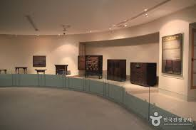
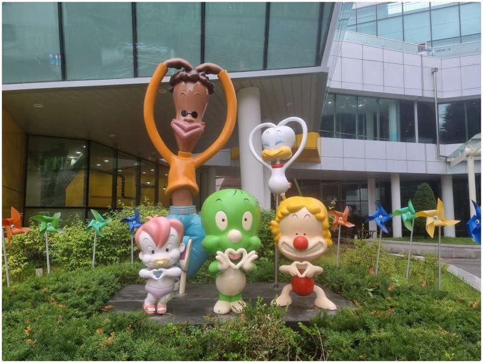
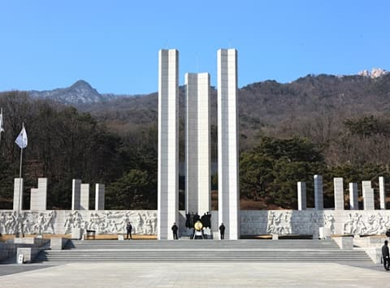
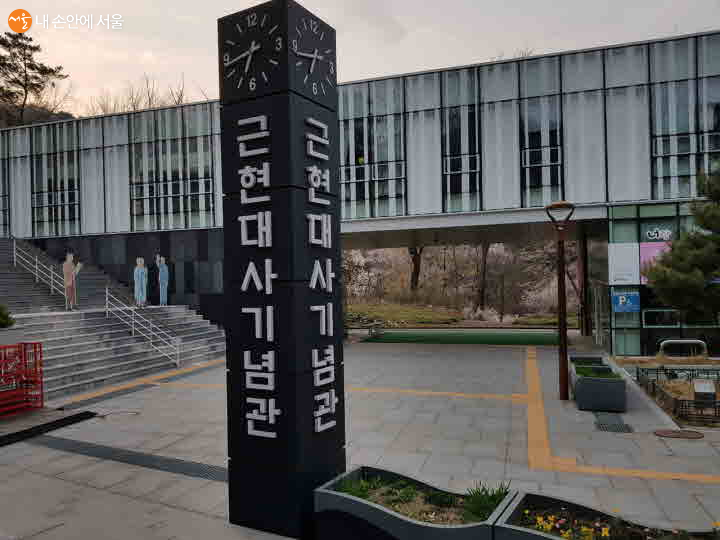
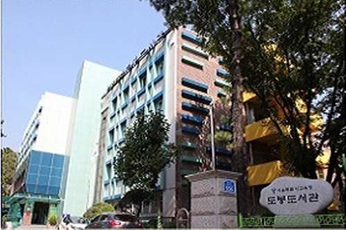
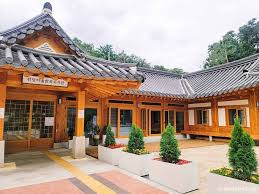
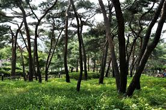
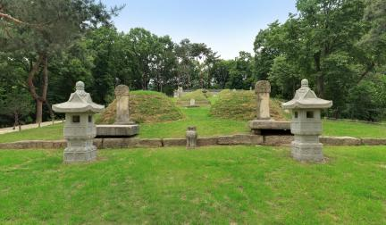

덕성여자대학교는 서울특별시 도봉구 삼양로144길 33에 위치한 4년제 여자 대학교이며, 도봉구에 위치한 유일한 대학교다.
덕성여대 근처에는 놀거리가 많이 없기 때문에, 얼마 없는 놀거리를 쥐어짜내어 정리한 페이지다.
덕성여대 학생들의 우주공강 시간을 의미있게 사용하는 데 도움이 되었으면 한다!
🎨 문화 & 전시
| 대표이미지 | 이름 | 홈페이지 | 문의 및 안내 | 이용시간 | 위치 |
|---|---|---|---|---|---|
|  | 덕성여자대학교 박물관 | 홈페이지 연결! | 02-901-8131 | 10:00~16:00 | 서울특별시 도봉구 삼양로144길 33 (쌍문동) |
|  | 둘리뮤지엄 | 홈페이지 연결! | 02-990-2200 | 10:00~18:00 | 서울특별시 도봉구 시루봉로1길 6 (쌍문동) |
|  | 국립4·19민주묘지 | 홈페이지 연결! | 02-996-0419 | 07:00~17:00 | 서울특별시 강북구 4.19로8길 17 |
|  | 근현대사기념관 | 홈페이지 연결! | 02-903-7580 | 09:00~18:00 | 서울특별시 강북구 4.19로 114 (수유동) |
📚 도서관 & 학습 공간
| 대표이미지 | 이름 | 홈페이지 | 문의 및 안내 | 이용시간 | 위치 |
|---|---|---|---|---|---|
|  | 도봉도서관 | 홈페이지 연결! | 02-6714-7400 | 08:00~22:00 | 서울특별시 도봉구 삼양로 556 (쌍문동) |
|  | 원당마을한옥도서관 | 홈페이지 연결! | 02-906-2022 | 09:00~20:00 | 서울특별시 도봉구 해등로32가길 17 |
🌿 자연 & 산책
| 대표이미지 | 이름 | 홈페이지 | 문의 및 안내 | 이용시간 | 위치 |
|---|---|---|---|---|---|
|  | 솔밭근린공원 | 홈페이지 연결! | 02-901-6953 | 상시 개방 | 서울특별시 강북구 삼양로 561 (우이동) |
|  | 연산군묘 | 홈페이지 연결! | 02-3494-0370 | 09:00~18:00 | 서울특별시 도봉구 방학로17길 46 (방학동) |